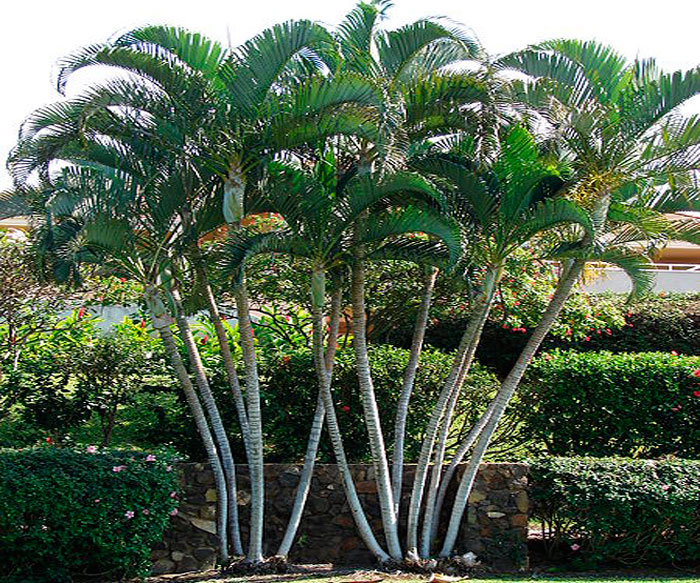
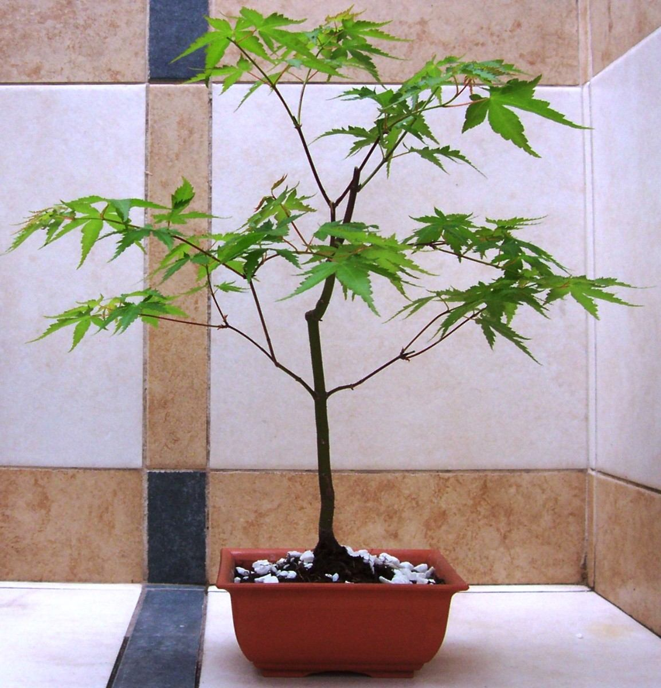
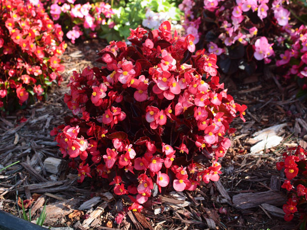

Una planta ornamental es aquella que se cultiva y se comercializa con propósitos decorativos por sus características estéticas, como las flores, hojas, perfume, la peculiaridad de su follaje, frutos o tallos en jardines y diseños paisajísticos, como planta de interior o para flor cortada. Su cultivo, llamado floricultura, forma una parte fundamental de la horticultura. Su importancia se ha incrementado con el desarrollo económico de la sociedad, el incremento de las áreas ajardinadas en las ciudades y el uso de plantas de interior en hogares y edificios públicos.
Las plantas ornamentales normalmente se cultivan al aire libre en viveros, con una protección ligera bajo plásticos o en un invernadero con temperatura controlada. Estas plantas se suelen vender con o sin maceta para ser trasplantadas al jardín o simplemente ubicadas como planta de interior.
Importancia de las las plantas
Desde tiempos remotos hasta la actualidad la humanidad ha dependido de las plantas. De ellas se obtienen productos para satisfacer necesidades de alimento, vivienda, energía, salud, vestido y estética. El interés por las plantas ha permitido observar mejor sus características y hacer un mayor uso de ellas. Las plantas tienen un notable valor económico, estético y recreativo, pero sobre todo ecológico:
El valor económico de las plantas proviene de los productos que se extraen de ellas, como madera, materias primas, sustancias orgánicas y medicinales.
El valor estético y recreativo de las plantas mejora nuestra calidad de vida, brindándonos espacios para descansar o estimular los sentidos.
El valor ecológico de las plantas es fundamental, pues además de proporcionarnos oxígeno, actúan como filtros de los contaminantes del aire y el agua, protegen y fertilizan el suelo, regulan la temperatura, aminoran el calentamiento del planeta y son la base de la cadena alimenticia.

Palma Areca

>Bonsais Japones
Helecho Costilla de Vaca

Petunia
CONTACTOS
Vivero Florisanto
Telefonos: 3135058066 - 3126688884
Email:vivero-florisanto@hotmail.com
Dirección: Calle 29 # 38-70 Via Planeta Rica K2